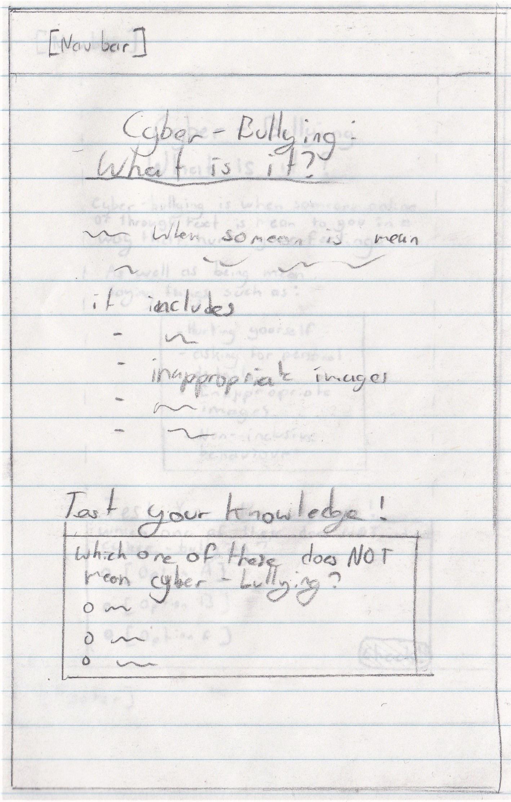
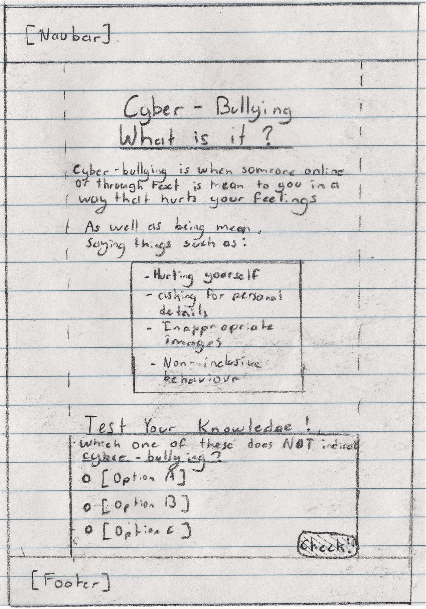

With the interactive modules, our goal is to provide a simple learning solution, whilst also providing interactivity through the use of frequent activities to test the user’s knowledge after reading a section of the module. In addition, use of pop-ups tied to complex terms will be implemented, allowing the user to quickly learn the definition of the word on the spot. In actuality, whilst the interactive module may seem to be complex feature, it is actually an amalgamation of other various features which help it to become an interactive module.
Gabe, a 12 year old boy who is attending school has a computer lab class during Thursday. Considering it is well into the year, Gabe has learnt basic IT proficiency and can navigate a variety of web pages very well. Gabe also uses a phone and tablet to participate in various recreational activities, adding to his familiarity with technology.
Gabe is a 12 year old boy who is taking a computer lab class is asked to complete at least one section of an interactive module about cyber bullying. Throughout this module he will read short articles about what cyber bullying is and how to identify it. At the end he is presented with a scenario: He is asked which one of the following examples does not represent cyber-bullying. As Gabe has just completed the module detailing cyber-bullying, he swiftly chooses the option which does not seem quite right. He then submits the answer and finds he chose correctly. He then proceeds to the quiz section of the module.
Following is the previous iterations of the design, I personally use paper prototyping as I find it is easier to express creative ideas.
 